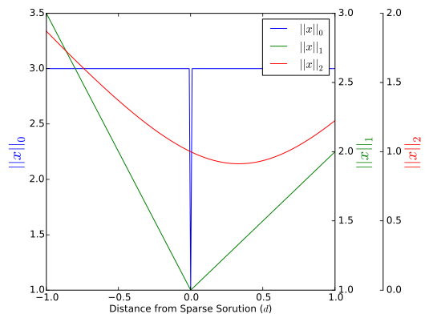

Three signals are shown below---a
constant ($x_0$),
a line ($x_1 t$) and a parabola ($x_2 t^2$). Three samples
(red, blue and green) are available for each signal at fixed
sampling instants. One signal is secretly chosen. What is the
smallest set of samples (of red, blue and green) needed to know the
chosen signal? Just the red and blue samples? All three? Solve
this riddle and you understand the essence of
compressive sensing
(CS)---but you'll need to read further to appreciate why.
Coefficients $x_0$, $x_1$ and $x_2$ can be any non-zero values.
The sampling instants ($t=-1$, $t=0$ and $t=2$) are fixed.
Compressive sensing is also known as "compressed sensing",
"compressive sampling", or "sparse sampling"
([http://en.wikipedia.org/wiki/Compressed_sensing,wikipedia]).
This introduction to CS is mainly intuitive. If your background is
in science or engineering, and you want to appreciate the
*fundamental* ideas behind CS, this tutorial is for you. There is a
slide deck,
fancy
plots, even code to run. A
companion module,
Compressive Sensing Primer,
extends a bridge from this module to real-world applications.
All figures and numerical results in this web page are generated
using Python or Octave. We show some of the key code. To access
__all__ computational code, click the "Sandbox" button at the top of
the page. You can also edit the code, run it in the cloud, and
display its results. All directly in the web page, in your own
workspace.
Overview
CS is a tale of two
coordinate
systems---of the same signal expressed in different ways
(mathematically, according to different bases). According to one
[http://en.wikipedia.org/wiki/Basis_(linear_algebra),basis] the
coordinates are sparse (have coefficients with at least one zero).
According to the other basis the coordinates are compressible (have
redundant coefficients that may be dropped). The promise of CS is
that the compressed coordinates---that is, with the redundant
coefficients omitted---take less bandwidth to transmit (fewer bits
to store, etc.).
A [http://en.wikipedia.org/wiki/Coordinate_system, coordinate
system] uses a tuple of numbers to locate or describe something.
Following [books.google.co.nz/books?isbn=0898714540, Meyer] any
vector can be expressed as a
[http://en.wikipedia.org/wiki/Linear_combination,linear
combination] of basis vectors, and the coefficients in that sum
are collectively known as the __coordinates__. Obviously, the
coordinates depend on the basis.
Any vector may be expressed as a
[http://en.wikipedia.org/wiki/Linear_combination, linear
combination] of basis vectors. The mulitplier of each vector in
that sum is the __coefficient__ with respect to that basis element
([books.google.co.nz/books?isbn=0898714540,see Meyer]).
Collectively the coefficients are known as the __coordinates__.
For the polynomial riddle the
constant, line and parabola are all versions of a signal
$f(t)=x_0+x_1 t+ x_2 t^2$, where only one of $x_0$, $x_1$ or $x_2$
is not zero (we don't know which!). Thus, $[x_0~x_1~x_2]^T$ are
sparse coordinates for $f(t)$ (according to the basis
$\mathcal{B}_N=\{1,t,t^2\}$).
The red, blue and green sample values---say $[b_0~b_1~b_2]^T$---of
$f(t)$ are a second
set of coordinates according to a second basis of polynomials
(discussed
later). If we can use fewer coordinates (e.g.,
$[b_0~b_2]^T$) and still recover $[x_0~x_1~x_2]^T$ then $f(t)$ has
been
successfully compressed.
While obvious to some, the idea that a signal's samples are also
its coordinates according to some basis may cause others to
stumble. If you're familiar with [TBD, Whittaker-Shannon
interpolation], think of the basis signals as the shifted "sinc"
functions, so that only one basis signal is non-zero at each
sampling instant. Whenever this is true (not just for sinc
interpolation) then the sample values themselves form the
coordinates of the signal.
This is different from other methods of compression, where the
entire set of samples is processed and compressed to a smaller
set. Here the compression takes place along with the measurement
(e.g., dropping a sample). However, later we will see that CS
often involves taking weighted combinations of samples, in which
case the distinction is less clear.
We first solve the polynomial riddle with everyday logic. The
remaining sections use the riddle as a launchpad---extending the
kernel of this [http://en.wikipedia.org/wiki/Toy_problem, toy
problem] towards more general, and useful, ideas.
Solving the Riddle
Taken together, three samples identify *any* second order
polynomial. That is, given almost any three points, the second
order polynomial that passes through all of them is
[http://en.wikipedia.org/wiki/Polynomial_interpolation#
Uniqueness_of_the_interpolating_polynomial,unique]. Collectively
then, the red, blue and green samples are sufficient to identify the
riddle's secret signal. But, can we do better?
Certainly one sample is not enough; since all the signals can
agree on any one sample
value (for some choice of $x_0$, $x_1$ and $x_2$) they are
impossible to distinguish. In other words, with a single sample
there are many possible
[http://en.wikipedia.org/wiki/Aliasing,aliases]. Aliases are
signals that are equal at the sampling instants but differ
elsewhere.
For example, say the parabola has value $p$ at the first sampling instant.
The constant aliases the parabola if $x_0=p$.
Similarly, for two samples, if two different signals (the line and
parabola say) agree at both sampling instants they are aliases---it
is impossible to tell which signal was secretly chosen. For
example, choosing the blue and green samples, the line and parabola
agree whenever $x_1=2x_2$ and so these samples do not solve the
riddle. We could not know with certainty the chosen signal using
the blue and green samples---and the red and blue samples are ruled
out on similar grounds.
However, no line and
parabola can __ever__ agree at the red and green samples.
Also, neither the line nor parabola
can ever agree with the constant. Therefore, the constant,
line and parabola can *always* be identified with the red and
green samples---given red and green samples we can always tell
which signal was chosen (and determine $x_0$, $x_1$ or $x_2$).
The answer to our introductory challenge is thus: the red and
green samples are sufficient to choose between the constant, line
and parabola.
The line and parabola have different signs at the red and green samples.
The constant and line have different signs at the red and green
samples. The constant and parabola have the same sign, but the
values of the parabola are always different (and the values of the
constant are always the same).
Significance of the Riddle
Before delving into the detail in later sections, let's first
broadly consider what can be learned from the polynomial riddle.
Compression & Sparsity
The highest order signal, the parabola, suggests that three samples
are *sufficient* to identify $f(t)$. Indeed, if nothing else is
known about $f(t)$ three samples are * necessary *. However, a
two-sample solution illustrates two important points: (1)
__compressed__ coordinates exist for $f(t)$; (2) it was
the __known__
sparsity that allowed the compression.
In solving the riddle, the pivotal issue was whether any
__single__ signal (constant, line or parabola) could be mistaken
for any other. We were not concerned with __combinations__ of
signals---and if we were, the answer to the riddle would be "all
three samples".
K-Sparse Aliases
Preventing aliases was the key to the solution---but not just any
aliases. There had to be no 1-sparse aliases. That is, we could
not allow two __individual__ signals to agree at the sampling
instants. However, if a __combination__ of a constant and a line
agree with the parabola---who cares? 2-sparse aliases (combinations
of the constant, line and parabola) are outside the realm of the
riddle. The K-sparse alias will be a pivotal idea below.
Only 1-sparse signals (constants, lines OR parabolas) are valid in
the riddle. Therefore, we are only concerned with 1-sparse aliases.
2-sparse aliases (combinations of signals) do not concern us.
Polynomials
Studying polynomials is less limiting than it may seem because
periodic signals are
[http://en.wikipedia.org/wiki/Trigonometric_polynomial,
trigonometric polynomials] (i.e., polynomials defined on a complex
circle). In that context, the sparse coordinates (sparse polynomial
coefficients) correspond to a sparse frequency representation.
For example, the band-limited signals found in mobile
communications.
Sub-Nyquist Sampling
With a minor abuse of
terminology, three samples are the
[http://en.wikipedia.org/wiki/Nyquist_rate,Nyquist rate] for
second order polynomials. Compressive sampling allows sub-Nyquist
sampling of sparse signals. If this seems surprising (even
blasphemous), this will evaporate once you understand just what a
tight constraint sparsity imposes on the signal. Sub-Nyquist
sampling is possible only if we agree to constrain the family of
possible signals.
Minor, because it is the correct term for __trigonometric__ polynomials.
Change of Basis
The key to CS is a pair of bases---one basis for which the signal's
coordinates are sparse and one basis for which the coordinates are
redundant (has coefficients that can be discarded). Such a
[http://en.wikipedia.org/wiki/Change_of_basis, change of basis] is
an idea shared with venerable compression technologies such as
[http://en.wikipedia.org/wiki/JPEG,JPEG] (Strang's
[http://ocw.mit.edu/courses/mathematics/18-06-linear-algebra-spring-2010/
video-lectures/lecture-31-change-of-basis-image-compression/,lecture]
on changes of basis and image compression inspired this treatment of
CS).
Two Important Bases
The polynomial
signal $f(t)=x_0+x_1t+x_2t^2$ has the "natural" basis
$\mathcal{B}_N=\{1,t,t^2\}$---with coefficients $x_0$, $x_1$ and
$x_2$. For our polynomial riddle $\mathcal{B}_N$ is also a
sparsity
basis because only one of $x_0$, $x_1$ and $x_2$ is not zero.
For CS, the sparsity basis is one of two important bases. The
second we will call the
sensing basis.
The coordinates according to the sensing basis (the *sensing
coordinates*) are obtained by directly observing the signal. For
the polynomial riddle the sensing coordinates are the __values__ of
the signal at the sampling instants (i.e., the sample values). The
actual sensing basis consists of three polynomials, each of which is
unity at one sampling instant and zero at the other sampling
instants (i.e., [http://en.wikipedia.org/wiki/Lagrange_polynomial,
Lagrange polynomials]).
For example, observing the sample values. Or, in more advanced
treatments, linear combinations of sample values.
While the Lagrange polynomials are the most
obvious
choice of sensing basis they are far from the only choice.
We might entertain (purely for example) a sensing basis for which
the coefficients are the
mean of adjacent
sample values. Such freedom to choose the sensing basis is
an important aspect of CS (why "Compressed __Sensing__" is a
better name than "Compressed
__Sampling__")---but
we don't need it here. Sensing coordinates equal to the
sample values are enough.
Obvious, because the coefficients are just the sample values of
the signal.
More generally, some
[http://en.wikipedia.org/wiki/Linear_combination, linear
combination] of samples.
The whole point of the sensing basis is that with cunning
configuration (say by selection of sampling instants, which we
consider), or even combinations of sample values
(which we
don't) not all of the sensing coefficients are required to
identify a sparse signal---some coefficients are __redundant__.
Thus we call the sensing basis $\mathcal{B}_R$, and our next step is
to show an intuitive, geometrical picture of the polynomial riddle.
It is helpful to visualize our signals in a three dimensional space
(i.e., the ubiquitous
vector-as-an-arrow scenario). The three orthogonal axes
correspond to the sensing coordinates---so, for instance, the
red, blue and
green sample values each get an axis (say the $b_0$, $b_1$
and $b_2$ axes).
For a gentle introduction see, for example, Haykin's
[http://books.google.co.nz/books?id=BUkcAAAAQBAJ, Digital
Communications]. Of course, if you prefer to substitute "vector"
or "signal"---have at it.
In particular, we can represent the sparsity basis polynomials
$\mathcal{B}_N=\{1,t,t^2\}$
as
vectors.
The
constant, $f(t)=1$, has coordinates $b_0=1$, $b_1=1$ and
$b_2=1$ (or $[1~1~1]^T$ in matrix notation).
Similarly, the line (with $f(t)=t$)
and
the parabola (with $f(t)=t^2$) have coordinates
$[-1~0~2]^T$ and $[1~0~4]^T$ respectively.
This geometrical view will be invaluable below---first, let's
preview why. For the polynomial riddle we agree, from the outset,
to consider only signals that are 1-sparse according to
$\mathcal{B}_N=\{1,t,t^2\}$. Therefore, for this problem, signals
can *only* lie along the direction of
the
constant, the line or the parabola in our three dimensional
plot. *No other signals exist in the world of this problem.*
This is a strong constraint! With three coordinates we can represent
__any__ second order polynomial, so it's reasonable that fewer coordinates
should be required when the signal is so rigidly constrained.
CS is both much more than this idea (it is a very rich theory)
and entirely this idea (this is the heart of CS).
Figure 2.
Sparsity basis in sensing coordinates.

Sparsity Basis Projections
Given the constraint that every signal in the polynomial riddle must
lie along the direction of
the
constant, the line or the parabola our challenge is to find
coordinates with fewer than three coefficients from which the
original signal can be restored. The core idea is to
project the
signal onto a subspace (say a plane), which has fewer dimensions
(and obviously fewer coefficients). Then, use the signal's known
sparsity to reconstruct the signal from its projection.
Projecting onto a plane amounts to finding the closest vector in
the plane. When the plane is orthogonal to an axis, the means
simply dropping the coefficient of that axis. Of course, it's
trickier when the basis is not orthogonal, and the plane is skewed
with the axes (see, e.g.,
[http://books.google.co.nz/books?isbn=0898714540, Meyer] or
[http://en.wikipedia.org/wiki/Projection_(linear_algebra),wikipedia]).
For the subspace, consider
a plane
perpendicular to the $b_1$ axis (i.e., perpendicular to
$[0~1~0]^T$). Now project the sparsity basis (the
constant, line and parabola) onto this plane. It's helpful to
have a name for these projections, so we'll call them
$\mathcal{SB}$-projections ("SB" for sparsity basis). Now, since
every 1-sparse signal lies along the direction of the constant,
the line or the parabola, the projection of every signal lies
along the direction of one of the $\mathcal{SB}$-projections.
A signal's projection is naturally compressed because it has fewer
coordinates (just $b_0$ and $b_2$ in this case). Furthermore,
because each $\mathcal{SB}$-projection is distinct (has a different
direction), different types of signals (constants, lines and
parabolas) project to different parts of the plane. Therefore,
given any (1-sparse) signal's projection we can reconstruct the
original signal by searching against all the
$\mathcal{SB}$-projections until we
find a match (when
the signal's projection is a scaled version of a
$\mathcal{SB}$-projection).
In other words, the projection of every signal lies along the line
of one of the yellow vectors. To recover the
signal, we choose the $\mathcal{SB}$-projection (yellow vector)
with which the signal's vector aligns.
Had we projected onto the plane orthogonal to the $b_0$ axis we'd
have found that two $\mathcal{SB}$-projections---of the line and
parabola---are co-linear (not distinct). This means a line and
parabola can be found that project to the same vector in the
plane---i.e., that agree at the sampling instants, and are therefore
1-sparse aliases. Just as we found when choosing the green and blue
samples above (and omitting the red $b_0$ sample) CS is
unsuccessful, because there is no way to uniquely find the signal
from which the projection originates.
For the 1-sparse case in three dimensions the idea of "distinct"
$\mathcal{S}$-projections is straightforward. But the general
$K$-sparse case in $N$ dimensions is less clear. For this we need
the idea of a $K$-sparse alias. First though, we'll start by
revisiting 1-sparse aliases in geometrical terms.
Figure 3. Sparsity basis projections
K-Sparse Aliases
In the context of CS, the sparsity of an alias is important. In a
1-sparse problem (such as the polynomial riddle) 1-sparse aliases
must be avoided, but 2-sparse aliases are of no concern.
For example, say we project onto the plane orthogonal to the $b_1$
axis, and then consider
just that
plane. The coordinates of the three
$\mathcal{SB}$-projections are $a_0=[1~1]^T$, $a_1=[-1~2]^T$ and
$a_2=[1~4]^T$ for the line, constant and parabola respectively. If
our (1-sparse) signal has a projection $\alpha a_0$ (i.e., it is a
constant with value $\alpha$), then a 1-sparse alias exists if we
can find a solution to $$ \alpha a_0 = \beta a_1 + \gamma a_2 $$
with either $\beta=0$ or $\gamma=0$. That is, there is a 1-sparse
alias if the second or third $\mathcal{SB}$-projection aligns with
the first.
By inspection of
the $\mathcal{SB}$-projections we see no two align, and
there clearly can be no 1-sparse aliases. We need *both* $\beta
\neq 0$ AND $\gamma \neq 0$ to satisfy the above equation (i.e., a
2-sparse alias).
To phrase this in a way that generalizes to higher dimensions,
rewrite the above equation as
$$ \alpha a_0 + (-\beta) a_1 + (-\gamma) a_2=0 $$
Now the question is slightly different: what combinations of the
$\mathcal{SB}$-projections add to zero? (You may already see where
we are heading---combinations of vectors that add to zero are
__dependent__.). More specifically, if we take a step $\alpha a_0$
away from the origin, how many *other* $\mathcal{SB}$-projections do
we need to get back? If the answer is "one" there is a 1-sparse
alias (either $\beta a_1$ or $\gamma a_2$). If the answer is "two"
there cannot be a 1-sparse alias (there is merely a 2-sparse alias).
And so we reach the crux. For the polynomial riddle we require that
the smallest number of dependent $\mathcal{SB}$-projections is three
(one projection away from the origin, two projections to return).
Indeed, this is true for 1-sparse CS in any dimension.
The extension to $K$-sparse signals is straightforward: if we take
$K$ $\mathcal{SB}$-projection steps
away from the origin, it *must* take at least $K+1$ steps to return.
Thus, in general,
CS is possible in any dimension if *the smallest number of
dependent $\mathcal{SB}$-projections is $2K+1$*. That is,
with $K$ steps away from the origin it must take at least $K+1$
steps to return.
We care about the direction of these steps, but not the magnitude.
That is, if no linear combination with fewer than $K+1$
$\mathcal{SB}$-projections can add to zero.
In matrix terms, if we write $A=[a_0~a_1~a_2]$ (assembling the
$\mathcal{SB}$-projections into the columns of $A$) then
$$ A=\begin{bmatrix} 1 & -1 & 1 \\ 1 & 2 & 4 \end{bmatrix} $$
and we require the minimum number of dependent columns (the
[http://en.wikipedia.org/wiki/Spark_(mathematics),spark] of $A$) to
be three. In general, if we express the $\mathcal{SB}$-projections
as the columns of a matrix, the spark of that matrix should be at
least $2K+1$ for CS. As we are about to see, $A$ forms the key CS
equation.
Figure 4. $\mathcal{SB}$-projections
in subspace
Key Equation
The key equation for CS is an
[http://en.wikipedia.org/wiki/Underdetermined_system, under
determined system of linear equations], $$Ax=b$$ As above, $A$ is
formed from the coordinates of the $\mathcal{SB}$-projections. In
general $A$ has $M$ rows and $N$ columns, where $M$ is the dimension
of the subspace we project into and $N$ is the number of sparsity
basis terms.
To derive $Ax=b$ let the $\mathcal{SB}$-projections be represented
by columns $a_0,a_1,...,a_N$---one for each of the $N$ sparsity
basis vectors.
If the sparsity basis
coordinates of our signal are $[x_0~x_1...x_N]^T$ (with only $K$
non-zero), then the coordinates of the signal's projection (i.e.,
the __compressed__ coordinates) are $b$, where: $$
\begin{bmatrix}a_0&...&a_N\end{bmatrix}\begin{bmatrix}x_0\\ \vdots
\\x_N \end{bmatrix} =\begin{bmatrix}b_0\\ \vdots \\b_M
\end{bmatrix} $$ With the obvious definitions we have $Ax=b$.
Recall that $Ax$ is a linear combination of the columns of $A$.
Since the columns of $A$ are the projections of the sparsity basis
vectors, and $x$ are the weights of the basis vectors in the
signal, $Ax$ is the projection of the signal.
Even though $A$ has fewer rows than columns we have seen that it is
possible to solve for $x$ with known sparsity---to recover the
original signal---so long as the columns of $A$ satisfy a certain
aliasing constraint. That is, that no fewer than $2K+1$ columns of
$A$ can combine to zero. However, the actual method of
reconstruction we used---searching over all possible combinations of
$K$ $\mathcal{SB}$-projections---quickly becomes infeasible as $N$
and $K$ increase.
Practical Reconstruction
Our approach to reconstruction has been simplistic---essentially
searching over all possible $\mathcal{SB}$-projections to find a
match. While this is adequate for the polynomial riddle it soon
becomes impossible as the size of our problems grow. We need a
better idea.
Let's first consider the
matrix form of our
polynomial riddle ($Ax=b$),
$$
\begin{bmatrix} 1 & -1 & 1 \\ 1 & 2 & 4 \end{bmatrix}
\begin{bmatrix} x_0 \\ x_1 \\ x_2 \end{bmatrix} =
\begin{bmatrix} 1 \\ 4 \end{bmatrix}
$$
Its easy to confirm that the solution is a parabola ($x=[0~0~1]^T$), but
what algorithm
should we use to solve for $x$? A __general__ (i.e., not sparse)
solution is a line, and
[http://en.wikipedia.org/wiki/Moore%E2%80%93Penrose_pseudoinverse#Obtaining_all_solutions_of_a_linear_system,
easy to find]. Basically, we seek the intersection of two planes:
$$ \begin{align} x_0-x_1+x_2&=1 \nonumber \\ x_0+2x_1+4x_2&=4
\nonumber \end{align} $$
Assuming we project on the plane orthogonal to the $b_1$ axis.
Because computers can execute algorithms.
Our challenge is to find the particular solution on the line that is
1-sparse. While we could continue to work in sensing coordinates,
it is __much__ more straightforward to switch to sparsity
coordinates, where the coefficients of each sparsity basis term
claim an axis. So, for instance, for $f(t)=x_0+x_1t+x_2t^2$ our
three axes
are labeled $x_0$, $x_1$ and $x_2$. These coordinates are
helpful because a 1-sparse signal is any point on one of the
axes---and nowhere else.
The sparse solution is thus where the line (the
intersection of two
planes), itself
intersects
an axis. The solution is at once conceptually simple and
computationally diabolical. Imagine traversing the line of
intersection and evaluating the sparsity (the number of non-zero
coordinates) at every point. Almost everywhere the sparsity is
three (none of the coordinates are zero)---except *at a single
point*, where $x$ is 1-sparse.
Yet, there is a hint of a solution if we think in terms of
[http://en.wikipedia.org/wiki/Norm_(mathematics), norms]. There are
many ways to mathematically assign a "length" to a vector. As
examples: the $\ell_0$ norm counts the number of nonzero
coefficients (i.e., the sparsity), the $\ell_1$ norm adds the
magnitudes of the coefficients, the $\ell_2$ norm is the
root-mean-square of the coefficients, and the $\ell_\infty$ is the
maximum absolute value of the coefficients. Minimizing the sparsity
is the same as minimizing the $l_0$ norm---so perhaps another norm
can be used in its place?
Let's evaluate
several norms as we traverse
the line of
possible solutions. The horizontal axis, $d$, is the
distance along the line from the optimum 1-sparse solution. Thus,
as a reference, the $\ell_0$ norm dips to indicate the optimum point
at $d=0$ (where $x$ is 1-sparse, and so $||x||_0=1$).
The
$\ell_2$ norm is the best behaved---a smooth parabola that we could
easily optimize computationally---but *its minimum does not
correspond to the sparse solution.* The $\ell_1$ norm is something
of a compromise---better behaved than the $\ell_0$ norm, not as nice
as the $\ell_2$ norm, but still indicating the sparse solution at
its minimum.
In fact, minimization of
the $\ell_1$ norm subject to linear constraints (like
$Ax=b$) is well understood and efficient and is thus a practical
means to compute the reconstruction of signals in CS. We
essentially exchanged an intractable search for a computationally
efficient *optimization* problem.
I.e., the solution to $Ax=b$ with the smallest $||x||_1$.

Figure 6.
Norms evaluated along solution of $Ax=b$.
Several tools are available to optimize the $\ell_1$-norm subject to
$Ax=b$. The following CoffeeScript employs the
[http://stemblab.github.io/irls/, IRLS blab].
Summary and Extensions
A change of basis (i.e., a change of coordinate system) is the heart
of CS. We start with a basis in which the signal is sparse and move
to a basis in which the signal can be reconstructed from a
projection onto a subspace. This means the coefficients that don't
belong to the subspace are redundant, and we may drop them to find
compressed coordinates for the signal.
The key to reconstruction is ensuring that every signal of the
correct sparsity has its own unique projection. If two K-sparse
signals share a projection we say they are K-sparse aliases.
K-sparse aliases can be avoided by enforcing a constraint on the
projections of the sparsity basis (the $\mathcal{SB}$-projections).
If no fewer than $2K+1$ $\mathcal{SB}$-projections can be linearly
combined to sum to zero then a K-sparse signal's projection is
guaranteed to be unique, and the signal can thus be reconstructed
from the compressed coordinates.
Reconstruction is neatly summarized as seeking a solution to the
under determined linear equation $Ax=b$. Here the columns of $A$
are formed from the $\mathcal{SB}$-projections, $x$ is the sparsity
coordinates, and $b$ is the compressed coordinates. The equation
has many solutions, but only one with the correct sparsity.
Computationally though, we seek the $x$ with the least $\ell_1$
norm.
Since a change of basis is a common approach to compression we might
well ask what is unique about CS. The difference is that CS
compresses the signal __as it is measured__---as opposed to
digesting the entire signal as a block. In the polynomial riddle,
other approaches may measure all three samples, change basis, then
drop coefficients from the new basis. With CS we do not need to
measure the samples that we know we will ultimately drop---in a
manner of speaking the compression and the sensing are combined.
This difference---between conventional compression and compressive
sensing---is more apparent as we consider increasingly realistic
problems. The companion module
Compressive Sensing Primer
is a bridge to such problems and addresses areas such as:
the relationship between the two bases;
uniform sampling (i.e., if you can't pick and choose sampling instants);
the signal class (periodic signals for example);
the effect of noise;
choosing bases for large-scale applications;
computational tools.
Alternatively, you may consider the many journal papers that address CS.
We have relied extensively on
these
papers.